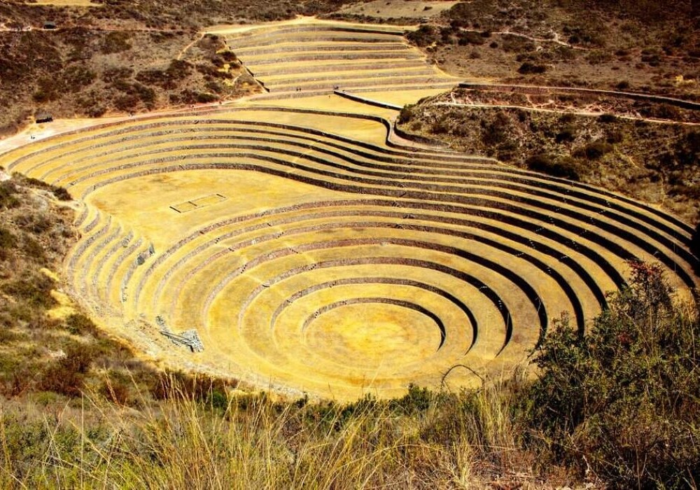
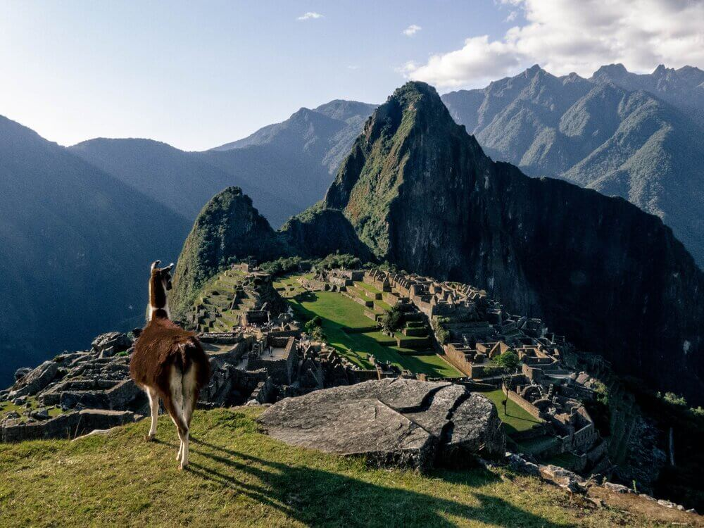

Main Attractions of Cusco
Historic Center of Cusco
The Historic Center of Cusco is the area comprised by the historic center of the city, where the most important Inca and colonial constructions in the city are preserved. It is also called the 'Monumental Zone of Cusco'. The area that covers the Historic Center of Cusco includes important Inca buildings such as the Inca temple of Coricancha (temple of the sun), the stone of the 12 angles and more. According to some chroniclers of the colonial era, the first urban outline of the city of Cusco was shaped like a puma, one of the sacred animals of the Incas. In the 16th century, the Spanish arrived, destroying Inca palaces and temples and building a new architecture in the city of Cusco. Progressively, an artistic, architectural and cultural miscegenation from the two cultures was carried out: the Inca and the colonial.
Sacsayhuaman
Sacsayhuaman is an Inca fortress located on the outskirts of Cusco, Peru. It is one of the most important archaeological complexes of the Inca Empire and is made up of three parallel walls of gigantic stones that are assembled with great precision without using any type of mortar. Contemplating its harmonious carved stone structures make its construction process somewhat difficult for the visitor to imagine and explain. It is considered a masterpiece of Andean architecture and engineering. The main characteristic of this cyclopean construction are its large stone blocks, some of which are more than 9 meters high and weigh 100 tons. In the back area of the complex, the Inti Raymi ceremony, also known as the 'Fiesta del Sol', is held every June 24.
Sacred Valley
The Sacred Valley of the Incas is a region of the Peruvian Andes that is home to numerous archaeological sites and indigenous peoples who keep their ancestral culture intact. The valley is crossed by the Vilcanota-Urubamba river, which was considered sacred by the Incas, since it represented the terrestrial counterpart of the Milky Way. Among the main attractions of the Sacred Valley are the citadels of Pisac, Ollantaytambo and Chinchero, which were built by the Incas Pachacuti and Tupac Yupanqui in the 15th century.
Machu Picchu
Machu Picchu is an ancient Inca city built in the 15th century. It is located in the Eastern Cordillera of southern Peru, at 2,430 meters above sea level. Its name means "old mountain" in Quechua, the language of the Incas. It is considered a masterpiece of Inca architecture and engineering, and one of the seven wonders of the world. In total, there are around 196 tourist spots within the citadel including archaeological complexes, squares, temples, water sources, monuments and residences; all intertwined with each other and with the natural environment.